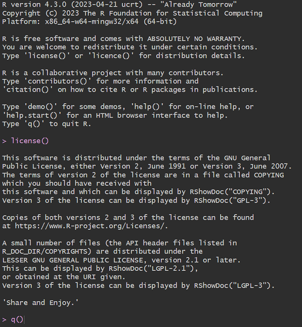

1 Introdução
Status üü®üü®üü®
Este capítulo tem como objetivo fornecer uma visão inicial mínima para que o usuário possa dar os primeiros passos na linguagem.
1.1 Iniciando o R…Studio
R é uma linguagem de programação e não está focada em oferecer uma interface sofisticada de interação com o usuário. Este papel fica por conta de outras ferramentas, como o RStudio, o IDE mais usado para a linguagem. Na prática “ninguém” usa o R puro para desenvolver seus projetos.
Desta forma usaremos o RStudio como ferramenta de desenvolvimento, pois ela irá nos fornecer muitas funcionalidades como preenchimento de código (code completion), janelas para instalar pacotes, janelas com arquivos de scripts, navegação por pastas, visualização e exportação de gráfico e claro comunicação direta com o R.
Ao longo deste livro serão usadas diversas funcionalidades do RStudio. Porém o foco será sempre no conteúdo, pois o detalhamento das principais funcionalidades do RStudio é tratada em seção específica.
Neste capítulo focaremos no painel Console, que “abriga” o R e no Source, que permite utilização de scripts.


1.2 Console do R
A tela inicial do R em si é um console, onde são passados comandos e seu interpratador os executa e, se for o caso, exibe saídas. O cursor fica posicionado ao lado do símbolo do prompt do R, >. Este símbolo indica que o sistema está pronto para receber novo comando.
1.2.1 Executando Comandos
A tela inicial fornece algumas sugestões para consulta a dados sobre R, como licença da linguagem, citação, ajudas, etc. Usaremos como exemplo inicial o comando license(). Após a digitação do comando devemos confirmar com ENTER para que o R execute o comando informado e exiba na tela o resultado, no caso a licença da própria linguagem. Após a execução um novo sinal do prompt é exibido em aguardo de um possível próximo comando.
Podemos digitar q(), por exemplo, que é a função que efetua o encerramento do R.

Agora considere um cenário diferente, onde executamos o comando license() seguido do comando citation() (que mostra como deve ser feita a citação da Linguagem R). Conforme os comandos forem sendo passados, o console vai sendo preenchido com estes comandos e suas respectivas saídas. A medida que a tela vai ficando “cheia” os dados exibidos no topo vão “sumindo” para dar lugar aos mais recentes, na parte inferior.
Buscando Comandos Anteriores
Para buscar comandos executados anteriormente, pode-se usar a seta para cima do teclado. Os comandos vão sendo apresentados do mais recente ao mais antigo.
1.2.2 Erros
Sempre que ocorrer algum erro na execução de um comando será exibida no console uma mensagem com o termo Error. Muitas vezes a mensagem de erro auxilia na identificação da causa do erro reportado. Abaixo um exemplo com erro retornado pelo R após a tentativa de execução de uma função inexistente (erro na digitação do comando).
citatin()Error in citatin(): não foi possível encontrar a função "citatin"1.3 Trabalhando com Scripts
Scripts são arquivos de texto que recebem códigos e conforme desejo do usuário são enviados ao console para execução. Na prática usar o console diretamente é útil para pequenas operações. No Rstudio você pode criar um script em File > New File > R Script. O arquivo de script será aberto no painel Source.
Para executar comandos de um arquivo de script você pode usar atalhos de teclado (Ctrl + Enter) ou através do botão Run no topo superior esquerdo da aba Source. Ambas opções executam ou a linha corrente ou a parte do texto selecionada.

1.3.1 Comentários
R aceita comentários em seu código através do caractere sustenido (hashtag), ’#’. Qualquer texto após será ignorado pelo interpretador. Comentários são muito importantes para facilitar a leitura do código posteriormente.
Porquê…
Em operações mais complexas procure colocar comentários que expliquem os motivos de se executar alguma operação e não o que o código está fazendo. Foque no ‘porquê’ de cada operação e não no ‘o que’.
1.4 Objetos
Conforme o R Core Team(R Core Team 2023a, cap 3) ‘as entidades nas quais R opera são tecnicamente conhecidas como objetos’. Existem diversos tipos de estrutura de dados em R, mas neste capítulo inicial serão usados objetos do tipo vetor, pois este é o objeto mais básico.
Variáveis
Muitas vezes objetos em R são chamados de variáveis, no sentido de que variáveis armazenam dados. Isto ocorre principalmente para objetos que armazenam um único valor, como um único número ou texto.
1.4.1 Vetores
Vetores são entidades que armazenam dados em posições (R Core Team 2023b, cap 2). Os vetores são ditos atômicos, pois seus dados são todos do mesmo tipo. Você pode pensar em um vetor como uma “local” onde serão armazenados dados. Os vetores podem ser de um dos 6 tipos abaixo:
| Tipo | Descrição | Exemplo |
|---|---|---|
| logical | lógico | TRUE |
| integer | número inteiro | 1 |
| double | número com ponto flutuante (real) | 1.5 |
| complex | número complexo | 1i |
| character | texto (strings) | R é software livre. |
| raw | bytes |
1.5 Criação de Objetos
Para criação de objetos no R são usados os operadores de atribuição, <- e =. O operador mais usado é o <-. Assim para criação de um objeto pode ser usado o código abaixo:
objeto1 <- 10 # atribui valor 10Para criação de variáveis do tipo texto, devem ser usadas aspas, simples ou duplas. Aqui o objeto2 foi criado com uso de aspas para que o R trate o valor como character.
objeto2 = 'texto' # atribui texto1.6 Operações com Objetos
Objetos podem ser atualizados novamente com o operador <-. No exemplo abaixo vamos criar um vetor de nome objeto3 com a funçãoc, que concatena valores, em conjunto com o operador :, que cria sequências de valores. Na sequência o objeto3 será atualizado recebendo seu próprio conteúdo acrescido do valor 10.
objeto3 <- c(1:5)
objeto3[1] 1 2 3 4 5typeof(objeto3)[1] "integer"objeto3 <- objeto3 + 10O vetor objeto3 foi criado com 5 posições, armazenando os valores de 1 a 5. Podemos acessar, por exemplo a terceira posição do vetor, através do operador de extração [ em combinação com o índice do vetor.
objeto3[3] # exibe terceiro elemento[1] 13objeto3[3] + 10 # somando valor[1] 23Note que sem o operador de atribuição o valor da posição 3 do objeto3 não é atualizada, apenas exibda no console. Para atualizar seu valor usamos:
objeto3[1] 11 12 13 14 15objeto3[3] <- objeto3[3] + 30
objeto3[1] 11 12 43 14 151.6.1 Coerção
Quando vetores recebem dados de um tipo diferente o R tenta fazer uma operação de coerção, transformando os valores a fim de “atender” a todos. Nem sempre esta operação é possível e ela muitas vezes altera o vetor original. No exemplo abaixo o valor da posição 1 do vetor será atualizado para receber a letra A. Como o vetor originalmente era do tipo integer, o R fará a conversão dos valores para tipo character. Desta forma operações matemáticas não serão mais possíveis sobre este vetor.
objeto3[1] <- 'A'
objeto3[1] "A" "12" "43" "14" "15"typeof(objeto3)[1] "character"objeto3 + 10Error in objeto3 + 10: argumento não-numérico para operador binário1.7 Exibindo Objetos
O R possui a função ls que exibe os objetos existentes no ambiente.
ls()[1] "objeto1" "objeto2" "objeto3"1.8 Remoção de Objetos
Objetos podem ser removidos (excluídos) com a função rm.
rm(objeto2)
ls()[1] "objeto1" "objeto3"1.9 Usando Funções
O coração da linguagém R são suas funções. Através delas são feitas as mais diversas operações sobre os objetos. Basicamente funções devem ser usadas através de seus nomes e com os argumentos dentro de parênteses: funcao(argumento1, argumento2, …).
Por exemplo, a função typeof exige a informação de um argumento (um objeto do R).
typeof(objeto1)[1] "double"O R processa esta função e devolve seu retorno, no caso qual o tipo do objeto1.
Pode-se visualizar o valor armazenado em um objeto com a função print, bem como exibir os objetos criados no R com a função ls. Note que a função ls aparentemente não exige argumentos.
print(objeto1)[1] 10ls()[1] "objeto1" "objeto3"1.9.1 Argumentos de Funções
As funções em R podem ter diversos argumentos e muitas vezes estes argumentos possuem valores definidos por padrão. Assim caso o usuário não informe nenhum valor para os argumentos da função esta usará os valores previamente definidos em seu código. Por este motivo a função ls usada “sem” argumentos é processada normalmente. Mais detlahes em Funções.
Importante notar que os argumento possuem nomes e estes podem/devem ser usados. Voltemos a função typeof, ela possui apenas um argumento de nome x. Podemos usar a função typeof informando o nome do argumento e obtendo mesmo resultado anterior.
typeof(x = objeto1)[1] "double"Os argumentos podem ser omitidos e serão interpretados pelo R na ordem em que forem informados. Por exemplo a função rep.int retorna valores os valores indicados no argumento x n (times) vezes.
rep.int(5, 4)[1] 5 5 5 5rep.int(x = 5, times = 4) # de forma explícita[1] 5 5 5 5Perceba que os argumentos podem ser informados em ordem diversa, entretanto devem ser atribuidos de forma explícita. rep.int(times = 4, x = 5) é diferente de rep.int(4, 5).
rep.int(times = 4, x = 5)[1] 5 5 5 5rep.int(4, 5)[1] 4 4 4 4 4
Nota
Algumas funções não possuem argumentos e “apenas” executam seu código, não exigindo interação de entrada por parte do usuário, como por exemplo as funções Sys.Date() e Sys.time(), que retornam a data e data e hora respectivamente.
1.9.2 Armazenando Retorno
Para que o valor retornado por uma função seja armazenado, basta usar o operador de traibuição:
tipo <- typeof(objeto1)
print(tipo)[1] "double"typeof(tipo)[1] "character"Agora o objeto tipo armazena o valor retornado pelo função typeof, no caso o texto (character) “double”.
Última atualização: 15/08/2023 - 22:01:00